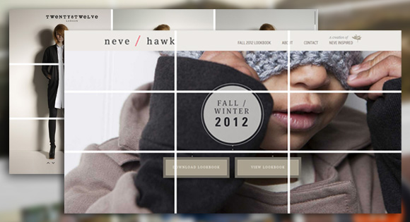

Visual Hierarchy
Company name: speckyboy
Website Adress: https://speckyboy.com/visual-hierarchy-web-design/
Defined: "The principle of arranging elements to show their order of importance"
Rule of Thirds
Company name: codrops
Website Adress: https://tympanus.net/codrops/2012/05/23/understanding-the-rule-of-thirds-in-web-design/
Defined: The grid-shaped rule of thirds concept helps you understand the places on an image where a person is naturally drawn when viewing an image or even your webpage.
PARC: Contrast

Company name: design shack
Website Adress: https://designshack.net/articles/graphics/5-ways-to-boost-contrast-in-your-web-design/
Defined: Contrast provides differentiation between elements, making each one look more individual, prominent and special.